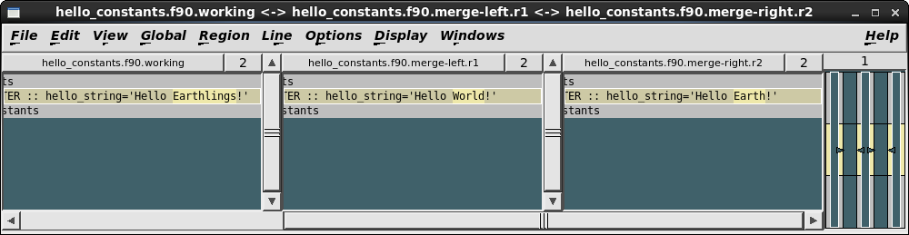

This chapter takes a hands-on approach to help you set up your FCM session, and familiarise yourself with some of the system's basic concepts and working practices. It is designed to complement other sections of the User Guide.
You may also find it useful to refer to the Annex: Quick reference.
It is easy to set yourself up to run FCM. Simply follow the steps below:
When you attempt to create a branch or commit changes to the repository, you will normally be prompted to edit your commit log message using a text editor. The order of priority for determining the editor command (where lower-numbered locations take precedence over higher-numbered locations) is:
vi (or gedit when running the
FCM GUI)It is worth bearing in mind that an editor must be able to run in the foreground. For example, you can add one of the followings in your $HOME/.kshrc (ksh) or $HOME/.bashrc (bash):
# GVim export SVN_EDITOR='gvim -f' # Emacs export SVN_EDITOR=emacs # gedit export SVN_EDITOR=gedit # Kate export SVN_EDITOR=kate
Trac can be configured to send automatic e-mail notifications to authors of any ticket whenever there are changes to that ticket (and we would expect most systems to be configured in this way). You should check that the settings for your name and e-mail address are correct. To do this you need to go to the Settings page once you are logged into Trac. (Click on Settings just above the menu bar). Check that your settings are entered correctly.
FCM assumes that firefox is the command to invoke your
default web browser. If you use another web browser, you should configure
it in your $HOME/.metomi/fcm/external.cfg file. See the
section on fcm browse for
further information.
This tutorial leads you through the basics of using FCM to make changes to your source code, and demonstrates the recommended practices for working with it. A tutorial Subversion repository, with its own Trac system, is available for you to practice for working with the FCM system. You will work through the following activities:
We recommend that you create a work area in your filespace, for example, $HOME/tutorial/work for your working copy, and $HOME/tutorial/test for your build test.
If you have not already done so, you should set up your desktop environment as described above in the How to set yourself up to run FCM section.
It is also worth knowing that the Subversion Book is a great source of reference of Subversion features. In particular, the Fundamental Concepts and Basic Usage chapters are well worth reading.
Trac is an integrated web-based issue tracker and wiki system. You will use it to manage and keep track of changes in your project. The issue tracker is called the ticket system. When you want to report a problem or submit a change request, you will create a new ticket. In a typical situation, you and/or your colleagues will make changes to your system in order to resolve the problem or change request, and you will monitor these changes via the ticket.
After completing this sub-section, you will learn how to:
Further reading:
To launch the Trac system for the tutorial: type and Enter the following command:
(SHELL PROMPT)$ fcm browse fcm:tutorial
This is probably the first time you have used the fcm
command. The command has the general syntax:
fcm <sub-command> [<options...>] <arguments>
For example, if you type fcm help, it will display a listing
of what sub-commands are available, and if you type fcm help
<sub-command>, it will display help for that particular
sub-command.
The trac sub-command launches the corresponding Trac system
browser for a Subversion URL specified in your argument. In this case, we are
asking it to display the Trac system browser for the tutorial. The argument
fcm:tutorial is a FCM URL keyword and will be expanded by FCM
into a real Subversion URL (e.g.
svn://fcm1/tutorial_svn/tutorial). You are encouraged to use FCM
URL keywords throughout the tutorial, as it will save you a lot of
typing.
Note: Although we use the Trac system as a browser for a Subversion repository, they do not interact in any other ways. Having access to a Trac system does not guarantee the same privilege to a Subversion repository. In particular, you should note the differences between the URLs of a Subversion repository path and its equivalence in a Trac browser.
There are other ways to launch the Trac system for a project. If you know its URL, you can launch the Trac system by entering it in the address box of your favourite browser. If you often access a Trac system for a particular project, you should bookmark it in your favourite browser.
Click on Login just above the menu bar, enter your Unix/Linux user ID as your user name and leave the password empty. Then click on OK to proceed.
Once you have logged in, the New Ticket link will become available on the menu bar. Click on it to display a new ticket form, where you can enter details about your problem or change request. In the tutorial, it does not matter what you enter, but you should feel free to play around with wiki formatting when entering the Full description. (Click on WikiFormatting to see how you can use it.) For example:
Tutorial to change repository files and resolve conflicts with the trunk
In this tutorial, I shall: 1. use FCM commands 2. play with WikiFormatting in Trac tickets 3. create a branch and checkout a working copy 4. make changes to files in it 5. commit my changes and assign the ticket for review 6. record the review and assign the ticket back to the author 7. merge in the trunk, and resolve any conflicts 8. merge my changes back to the trunk 9. close the ticket 10. delete my branch
At the bottom of the page, click the Preview button to see what the description would look like. When you are happy, click the Submit changes button. Trac will create the new ticket and return it in a state where you can append to it.
When the ticket is created, you should get an automatic e-mail notication from the Trac system. In real life, depending on the setting, the owner of your Trac system may also get a similar e-mail notification. It is worth noting that each time the ticket is modified, the Trac system will send out an e-mail notification to you (the reporter) and anyone who modified the ticket subsequently.
You should remember the number of your new ticket, as you will have to revisit it later.
In real work, it is often not practical to have to remember the numbers of all the tickets you have created. Trac provides a powerful custom query for searching a ticket. You can search for the ticket you have just created by clicking the View Tickets link. Feel free to play with the custom query tool. Add or remove filters and try grouping your results by different categories.
In addition, you can search your ticket using the keyword Search utility at the top right hand corner of each Trac page. (If you enter #<number> in the search box, it will take you directly to that ticket.) In the tutorial, however, it may be easiest if you simply leave the tutorial Trac system open, so that you do not have to login again when you come back to your ticket.
The status of the ticket is new. When you start working on a problem reported in a ticket it is good practice to change the status to in_progress to indicate that you are working on it. For the purpose of the tutorial, however, this is entirely optional since you know you will be doing all the work any way.
To start work on a ticket, click on start work in the Action box at the bottom of the page, and then click on Submit changes.
You create a branch by making a copy of your project at a particular revision. Most often, this will be a particular revision of the trunk, i.e. the main branch/development line in your project. A branch resides in the repository. It allows you to work in parallel with your colleagues without affecting one another, while keeping your changes under version control.
After completing this sub-section, you will learn how to:
Further reading:
Important note: please ensure that your branch is created from revision 1 of the trunk here, or the tutorial on merge will fail to work later.
Command line: issue the fcm branch-create [-rREV] TICKET
URL-PROJECT command. (Note: you can write fcm
branch-create as fcm bcreate or even fcm
bc.) E.g. if your ticket number is #133:
(SHELL PROMPT)$ fcm bc 133 fcm:tutorial@1
You will be prompted to edit the message log file. A standard template is automatically supplied for the commit. However, if you want to add extra comment for the branch, please do so above the line that says --Add your commit message ABOVE - do not alter this line or those below--. When you are ready, save your change and exit the editor. Answer Yes when you are prompted to go ahead and create the branch.
Note: Subversion will prompt you for a password the first time you access a repository. The password will normally be cached by the client, and you will not have to specify a password on subsequent access.
When creating branches for the first time, you will notice that FCM will create and commit any missing sub-directories it needs to set up your branch inside the repository, before creating your branch and commiting it.
Take a note of the revision number the branch was created at, and its branch name. (The revision number is the number following the last output that says "Committed revision". In the example above, the branch created at r811 is called branches/dev/matt/r1_133, which is a branch of the tutorial project in the svn://fcm1/tutorial_svn repository.)
If you wish, you can update your ticket with details of the branch. Note that this step is entirely optional. It is useful for developments which will take a long time to complete. For short lived branches, this step is probably unnecessary.
In the ticket you have created, refer to the revision number in the Add/Change box, for example:
r811: created source:tutorial/branches/dev/matt/r1_133@811.
Note:
r<number> or
[<number>] into a link to the numbered changeset.Click on Preview and check that the links work correctly, and on Submit changes when you are ready.
A Subversion working copy is an ordinary directory tree on your local system, containing a collection of files. It is your private working area in which you can make changes before publishing them back to the repository. You create a working copy by using the checkout command on some subtree of the repository.
After completing this sub-section, you will learn how to:
Further reading:
Command line: issue the fcm checkout (or simply
fcm co) command. E.g.:
(SHELL PROMPT)$ fcm checkout fcm:tutorial_br/dev/matt/r1_133 tutorial
checkout command, it will create a
working copy in the current working directory, using the basename of the
URL. For example, when you checkout the branch you have just created, the
command would create the working copy in $PWD/r1_133, which is
often undesirable. Make a note of the location of your working copy, in
case you forget where you have put it.Example:
=> fcm checkout fcm:tutorial_br/dev/matt/r1_133 tutorial A tutorial/doc A tutorial/doc/hello.html A tutorial/src A tutorial/src/subroutine A tutorial/src/subroutine/hello_c.c A tutorial/src/subroutine/hello_sub.f90 A tutorial/src/module A tutorial/src/module/hello_num.f90 A tutorial/src/module/hello_constants.f90 A tutorial/src/program A tutorial/src/program/hello.f90 A tutorial/fcm-make.cfg Checked out revision 811.
Subversion provides various useful commands to help you monitor your working copy. The most useful ones are "diff", "revert" and "status". You will also find "add", "copy", "delete" and "move" useful when you are rearranging your files and directories.
After completing this sub-section, you will learn how to:
Further reading:
For the later part of the tutorial to work, you must make the following modifications:
!This will print a really really big integer. WRITE(*, *) "Sadly, there's no encoding for Martian base-60"
Try the following so that you know how to restore a changed file:
fcm status commandrevert command to get the file back unmodified:
(SHELL PROMPT)$ fcm revert hello_c.c
You may also want to try the following FCM commands in your doc/ sub-directory. You can safely make changes here since they will not interfere with your code changes.
add
command, which lets the repository know you're adding a new file at the
next commit. For example:
(SHELL PROMPT)$ echo 'Some text' >new_file.txt (SHELL PROMPT)$ fcm add new_file.txt
copy and delete commands. For example:
(SHELL PROMPT)$ fcm copy hello.html add.html (SHELL PROMPT)$ fcm delete hello.html
move sub-command for the above
copy and delete.Change to the root directory of your working copy.
Command line: issue the fcm status (or simply
fcm st) command.
Example:
=> fcm status D doc/hello.html A doc/new_file.txt A + doc/add.html M src/module/hello_num.f90 M src/module/hello_constants.f90
This confirms the actions you have taken. You have
Deleted a file, Added a new file,
Added a file with history (+) and
Modified two others. It also confirms the action of the
revert command.
You can view the changes you have made to your working copy.
Command line: issue the fcm diff --graphical (or
simply fcm di -g) command.
A listing of the files you have changed will be displayed, and a graphical diff tool will open up for each modified file.
The change in your working copy remains local until you commit it to the repository where it becomes permanent. If you are planning to make a large number of changes, you are encouraged to commit regularly to your branch at appropriate intervals.
After completing this sub-section, you will learn how to:
Further reading:
Command line: issue the fcm commit (or simply
fcm ci) command.
A text editor will appear to allow you to edit the commit message. You must add a commit message to describe your change above the line that says --Add your commit message ABOVE - do not alter this line or those below--. (A suggestion is given as the highlighted text in the example below.) Your commit will fail if you do not enter a commit message.
Save your change and exit the editor. Answer Yes when you are prompted to confirm the commit. For example:
[info] gvim -f: starting commit message editor... Change summary: -------------------------------------------------------------------------------- [Project: tutorial] [Branch : branches/dev/matt/r1_133] [Sub-dir: <top>] D doc/hello.html A doc/new_file.txt A + doc/add.html M src/module/hello_num.f90 M src/module/hello_constants.f90 -------------------------------------------------------------------------------- Commit message is as follows: -------------------------------------------------------------------------------- #133: tutorial is fun. -------------------------------------------------------------------------------- Would you like to commit this change? Enter "y" or "n" (or just press <return> for "n"): y Adding doc/add.html Deleting doc/hello.html Adding doc/new_file.txt Sending src/module/hello_constants.f90 Sending src/module/hello_num.f90 Transmitting file data ... Committed revision 812. => svn update At revision 812.
Click on Timeline in Trac. Drill down to your changeset and see how it appears. (Alternatively, if you enter r<number> into the search box at the top right, it will take you directly to the numbered changeset.)
Note:
You should test the changes in your branch before asking a colleague to review them. FCM features a build system that allows you to build your code easily. As your changes may be located in a repository branch and/or a working copy, you should work with the extract system to extract the correct code to build. The extract system allows you to extract code from the repository, combining changes in different branches and your working copy, before generating a configuration file and a suitable source tree for feeding into the build system.
In this sub-section of the tutorial, you will be shown how to extract and build the code from your branch. (There are some extra activities on the extract and build systems in a later sub-section of the tutorial should you want to explore the extract and build systems in more depth.) In the example here, the extract and build systems will be shown to you in their simplest form. In real life, the managers of the systems you are developing code for will provide you with more information on how to extract and build their systems.
After completing this sub-section, you will learn how to:
Further reading:
You should extract and build your code in a different directory to your working copy. For example, you may want to create a sub-directory $HOME/tutorial/test/ and change to it:
(SHELL PROMPT)$ mkdir -p $HOME/tutorial/test (SHELL PROMPT)$ cd $HOME/tutorial/test
To set up a FCM make configuration file from scratch, launch your favourite editor and add the following lines:
steps = extract build
extract.ns = tutorial
extract.location[tutorial] = branches/dev/$LOGNAME/r1_133
extract.path-root[tutorial] = src
build.target{task} = link
Note:
extract.location
declaration is set to branches/dev/$LOGNAME/r1_133. If you
have named your branch differently, you should modify the right hand side
of the declaration.gfortran and gcc as the
default Fortran and C (respectively) compilers. If you do not have these
compilers installed on your system, you can configure your Fortran and C
compilers using the build.prop{fc} and
build.prop{cc}
declarations.Save the file as fcm-make.cfg and exit your editor.
Issue the command fcm
make and you should get an output similar to the following:
(SHELL PROMPT)$ fcm make [init] make # 2011-11-03 10:31:10Z [init] make config-parse # 2011-11-03 10:31:10Z [info] config-file=/home/matt/tutorial/test/fcm-make.cfg [done] make config-parse # 0.0s [init] make dest-init # 2011-11-03 10:31:10Z [info] dest=frsn@eld081:/home/matt/tutorial/test [info] mode=new [done] make dest-init # 0.0s [init] make extract # 2011-11-03 10:31:10Z [info] location tutorial: 0: svn://fcm1/tutorial_svn/tutorial/branches/dev/matt/r1_133@811 [info] dest: 5 [A added] [info] source: 5 [U from base] [done] make extract # 0.1s [init] make build # 2011-11-03 10:31:10Z [info] sources: total=5, analysed=5, elapsed-time=0.0s, total-time=0.0s [info] compile targets: modified=5, unchanged=0, total-time=0.3s [info] compile+ targets: modified=2, unchanged=0, total-time=0.0s [info] ext-iface targets: modified=1, unchanged=0, total-time=0.0s [info] link targets: modified=1, unchanged=0, total-time=0.0s [info] TOTAL targets: modified=9, unchanged=0, elapsed-time=0.4s [done] make build # 0.4s [done] make # 0.5s
If nothing goes wrong, you should end up with the sub-direcories extract/ and build/ in your working directory. The extract/ sub-directory contains the result of the extract and the build/ sub-directory contains the result of the build.
N.B. You should also find a .fcm-make/ sub-directory. It is
used by fcm make as a working area for your extract and build.
It also contains a diagnostic log file generated by the latest
fcm make command. The log file contains the diagnostic output in
high verbosity. If anything goes wrong, it is worth checking the content of
the log file for clues.
The executable you have built is hello.exe, which is located in the build/bin/ sub-directory. You can test your executable by running it. You should get an output similar to the following:
(SHELL PROMPT)$ PATH=$PWD/build/bin:$PATH hello.exe hello: Hello Earthlings! hello_sub: Hello Earthlings! hello_huge_number: maximum integer: 2147483647 hello_c: Hello World!
Your branch is normally isolated from other development lines in your project. However, at some point during your development, you may need to merge your changes with those of your colleagues. In some cases, it is desirable to merge changes regularly from the trunk to keep your branch up to date with the latest development. The automatic merge provided by FCM allows you to do this easily.
A merge results in a conflict if changes being applied to a file overlap. FCM uses a graphical merge tool to help you resolve overlaps in file text changes (text conflicts). If some of the changes include a deletion, renaming, or addition of the file, a filesystem conflict (tree conflict) may occur, which needs to be dealt with manually.
After completing this sub-section, you will learn how to:
Further reading:
Perform the merge in your working copy.
Command line: issue the fcm merge command.
E.g.
(SHELL PROMPT)$ fcm merge trunk
If there is more than one revision of the source that you can merge with, you will be prompted for the revision number you wish to merge from. You will not be prompted in this case, because there is only one revision of the source that you can merge with.
Example:
Eligible merge(s) from /tutorial/trunk: 2 Merge: /tutorial/trunk@2 c.f.: /tutorial/trunk@1 -------------------------------------------------------------------------dry-run --- Merging r2 into '.': U src/subroutine/hello_c.c A src/module/hello_number.f90 C src/module/hello_constants.f90 C src/module/hello_num.f90 Summary of conflicts: Text conflicts: 1 Tree conflicts: 1 -------------------------------------------------------------------------dry-run Would you like to go ahead with the merge? Enter "y" or "n" (or just press <return> for "n"): y Merge succeeded.
In the output of the merge, the C status at the beginning of
a line indicates that the first file you changed,
src/module/hello_constants.f90, is now in text
conflict. The C status in the 4th column of a line
indicates that the second file you changed,
src/subroutines/hello_num.f90, is now in tree conflict.
If you run fcm status, you will see extra information about the
merge, which may help you to resolve the conflicts:
=> fcm status
M .
? #commit_message#
M src/subroutine/hello_c.c
? src/module/hello_constants.f90.merge-left.r1
? src/module/hello_constants.f90.merge-right.r2
? src/module/hello_constants.f90.working
C src/module/hello_num.f90
> local edit, incoming delete upon merge
A + src/module/hello_number.f90
C src/module/hello_constants.f90
In the case of the file hello_constants.f90, the extra files
created (ending with working, merge-left.r1,
merge-right.r2) will be used to resolve the text conflict using
the 3-way difference tool xxdiff.
In the case of the file hello_num.f90, the extra line
underneath (local edit, incoming delete upon merge) displays the
conflict or dilemma that you must resolve - you have made a change to the
file in your branch (local edit) but someone has deleted the file on
the trunk (incoming delete upon merge). If you inspect the log of
the trunk, by typing e.g. fcm log -v -rHEAD:1
fcm:tutorial/trunk, you will find that someone has renamed
src/module/hello_num.f90 to
src/module/hello_number.f90.
The line: M . just refers to Subversion's merge tracking, which is not relevant here.
You will now have to resolve the conflicts.
Issue the fcm conflicts (or simply fcm cf)
command.
The xxdiff program comes into play:

See the sub-section on resolving conflicts, or the
xxdiff User's Manual (click on Help) to guide you
through this process. (If you do not want to learn how to use
xxdiff now, you can just click on the highlighted line in the
left hand column, and select Exit with MERGED from the
File menu. This saves the file you are merging in as the result of
the merge, i.e. you have merged the changes).
On resolving this conflict, you will be asked to run svn
resolved. Answer Yes.
You are now prompted to try to solve the tree conflict.
[info] src/module/hello_num.f90: in tree conflict. Locally: modified Externally: renamed to src/module/hello_number.f90 Answer (y) to keep the old name. Answer (n) to accept the rename. You can then merge in changes. Keep the local version? Enter "y" or "n" (or just press <return> for "n")
Entering y will keep the file as it is, and entering n will accept the external changes. Your problem is that the edit you made to hello_num.f90 is no longer valid on the trunk, because there the file has been renamed to hello_number.f90. To Subversion, it looks like hello_num.f90 disappeared. Your choices would be either to delete the new file by answering y, or incorporate your changes into the new file (hello_number.f90) by answering n. As the new filename comes from the trunk, we would normally accept it and incorporate changes into it, rather than delete it.
Answer n to accept the renaming of the file and merge in
changes. This will occur using xxdiff, as above.
Exit the xxdiff window as before, with Exit with
MERGED.
If you now run status, you will notice that these extra
conflict files have disappeared, and there are no more C
filename statuses.
Example:
=> fcm status M . ? #commit_message# M src/subroutine/hello_c.c D src/module/hello_num.f90 A + src/module/hello_number.f90
You have now resolved all the conflicts.
It is important to remember that the fcm merge command only
applies changes to your working copy. Therefore, you must now commit the
change in order for it to become permanent in the repository. Similar to
other changes, it is a good practice to use fcm diff to inspect
the changes before committing.
When you run fcm commit, you will be prompted to edit the
commit log as usual. However, you may notice that a standard template is
already provided for you by the fcm merge command. In most
cases, the standard message should be sufficient. However, if you want to add
extra comment to the commit, please do so above the line
that says --Add your commit message ABOVE - do not alter this line or
those below--. This is useful, for example, if there were significant
issues addressed in the merge.
For the purpose of this tutorial, we assume that your changes are complete, have been tested and committed to the repository, and are now ready for review. You should assign the ticket to the reviewer and inform him/her where to find the changes you wish him/her to review. The reviewer will record any issues in the ticket, perhaps linking to other documents as required. Once completed, he/she will record the outcome in the ticket and assign it back to the you.
After completing this sub-section, you will learn how to:
Further reading:
Before you ask someone to review your code, it is often a good idea to have a look at the changes one more time. To view the changes in a branch, you can look at all the changes relative to its base.
Command line: issue the fcm branch-diff
--graphical (or simply fcm bdi -g) command.
You should be presented with the differences between the branch and the trunk (since the last merge).
Note: you can also use the --trac (-t) option
instead of --graphical (-g) to view the changes in
a branch using Trac rather than using a graphical diff tool.
Command line: issue the fcm branch-diff --trac (or
simply fcm bdi -t) command.
Take note of the Trac URL for displaying the differences. The part that
begins with diff: is of particular interest to you, as it is a
Trac link that can be inserted into a Trac wiki/ticket. In the above example,
the Trac link would look like:
diff:/tutorial/trunk@2///tutorial/branches/dev/matt/r1_133@813.
Back in your ticket, add an appropriate comment showing where to find your changes, in the Add/Change box. Include a link to your branch and a diff link (see above) in the comment. For example:
The [log:tutorial/branches/dev/matt/r1_133@811:813] branch proposes changes to the greeting in hello_constants.f90. It also contains some new documents. See [diff:/tutorial/trunk@2///tutorial/branches/dev/matt/r1_133@813] for the changes. Fred, could you review the change, please?
Note: the syntax [log:tutorial/branches/dev/matt/r1_133@811:813] will be translated by Trac into a link to the revision log browser to display the log between revision 811 and 813 of the branches/dev/matt/r1_133 branch in the tutorial project; and the syntax [diff:/tutorial/trunk@2///tutorial/branches/dev/matt/r1_133@813] will be translated into a link to display the differences between the trunk at revision 2 and the branch at revision 813. Click on Preview and check that the links work correctly.
To re-assign a ticket to your reviewer, click on the reassign to button in the Action box section and enter the reviewer's User ID.
When you are ready, click on Submit changes.
For the purpose of this tutorial, you will act as the reviewer of the changes you have made. Following the review, you should record its outcome and re-assign the ticket back to the author. Enter the comment No issues were found during the review. Click on the reassign to button in the Action box section, and enter your guest account name. Click on Submit changes when you are ready.
Your changes in the branch have been tested and reviewed. It is now time to merge and commit it to the trunk. Once you have committed your change, you will close your ticket to complete the work cycle.
After completing this sub-section, you will learn how to:
Further reading:
Command line: issue the fcm switch (or simply
fcm sw) command. E.g.:
(SHELL PROMPT)$ fcm sw trunk
Command line: To check that your working copy is pointing to
the trunk, issue the fcm info command.
Command line: issue the fcm merge command.
E.g.
(SHELL PROMPT)$ fcm merge branches/dev/matt/r1_133
Example:
Eligible merge(s) from /tutorial/branches/dev/matt/r1_133: 813 812 Enter a revision (or just press <return> for "813"): Merge: /tutorial/branches/dev/matt/r1_133@813 c.f.: /tutorial/trunk@2 -------------------------------------------------------------------------dry-run --- Merging differences between repository URLs into '.': A doc/new_file.txt A doc/add.html D doc/hello.html U src/module/hello_number.f90 U src/module/hello_constants.f90 -------------------------------------------------------------------------dry-run Would you like to go ahead with the merge? Enter "y" or "n" (or just press <return> for "n"): y Merge succeeded.
Since there is more than one revision available for merging, you will be prompted for the revision number you wish to merge from. The default is the last changed revision of your branch. which is the revision you want to merge with, so you should just proceed with the default.
Since we merged in the latest changes from the trunk into the branch, there should be no conflicts from this merge.
Once again, please remember that the merge command only changes your
working copy. You need to commit the change before it becomes permanent in
the repository. Before you commit to the trunk, however, it is often sensible
to have a last look at what you are going to change using the
diff command.
Note: We have set up the repository to prevent any commits to the trunk to preserve the tutorial for other users, so your commit to the trunk will fail. However, you should try doing it any way to complete the exercise.
Command line: issue the fcm commit (or simply
fcm ci) command.
A text editor will appear to allow you to edit the commit message. You must add a commit message to describe your change above the line that says --Add your commit message ABOVE - do not alter this line or those below--. Since you are going to commit changes to the trunk, you should provide a useful message, including a link to your ticket. For example:
#133: tutorial completed.
When you are ready, save your change and exit the editor.
As we have said before, the command will fail when you try to proceed with the commit.
As you have completed your work, you should now update and close your ticket. In real life, you will typically include a closing comment with an appropriate Trac wiki link to the changeset in the trunk that fixes the ticket.
Since you cannot commit to the trunk in the tutorial, you can include a Trac link to the latest changeset in your branch. For example, you can put r813: fixed. in the comment. To mark the ticket as fixed, move down to the Action box section, click on resolve as and choose fixed. Use Preview to ensure that your links work correctly. When you are happy, click on Submit changes.
The extract and build systems are very flexible. If you have time, you may want to explore their uses in more depth.
After completing this sub-section, you will learn how to:
Further reading:
Modify the source files in your working copy and commit the changes back
to your branch in the repository. Re-run fcm make and see the results of the
changes.
In fact, you can test changes in your working copy directly using a
similar extract and build mechanism. In such case, you need to modify the
extract.location
declaration. For example:
extract.location[tutorial] = $HOME/work/tutorial
Modify the compiler flags, and re-run fcm make and see the results of the
changes. To modify the compiler flags, edit your FCM make configuration file,
and add the declarations for changing compiler flags. For example:
# Declare extra options for Fortran compiler
build.prop{fc.flags} = -i8 -O3
For further information on how to set your compiler flags, please refer to the FCM Make > Build.
Try extracting from an earlier revision of your branch. Suppose the HEAD
of your branch is revision 813, and the branch was created at an earlier
revision. You can extract your branch at, say, revision 811 by adding the
following to the extract.location
declaration in your FCM make configuration file:
extract.location[tutorial] = branches/dev/$LOGNAME/r1_133@811
You can also try extracting from the trunk. To extract from the
trunk@HEAD, simply comment out or remove the extract.location
declaration. To extract from a given revision of the trunk, you will need to
modify the extract.location
declaration in your FCM make configuration file. For example:
extract.location[tutorial] = trunk@1
You should remove your branch when it is no longer required. When you remove it, it becomes invisible from the HEAD revision, but will continue to exist in the repository, should you want to refer to it in the future.
After completing this sub-section, you will learn how to:
Further reading:
If you forget what your branch is called and/or what other branches you have created, you can get a listing of all the branches you have created in a project.
Command line: issue the fcm branch-list (or simply
fcm bls) command
Switch your working copy to point back to your branch. Before you do so,
revert any changes you have made in the working copy by issuing the fcm
revert -R . command. If a #commit_message# file exists,
remove it by issuing the rm '#commit_message#' command.
Command line: issue the fcm switch <URL> (or
simply fcm sw <URL>) command.
You can continue your work in the branch if you wish, but once you have finished all the work, you should delete it.
Command line: issue the fcm branch-delete (or
simply fcm bdel) command.
Example:
URL: svn://fcm1/tutorial_svn/tutorial/branches/dev/matt/r1_133 Repository Root: svn://fcm1/tutorial_svn Repository UUID: cb858ce8-0f05-0410-9e64-efa98b760b62 Revision: 813 Node Kind: directory Last Changed Author: Last Changed Rev: 813 Last Changed Date: 2005-11-09 09:11:57 +0000 (Wed, 09 Nov 2005) -------------------------------------------------------------------------------- Branch Create Rev: 811 Branch Create Date: 2005-11-09 08:34:22 +0000 (Wed, 09 Nov 2005) Branch Parent: svn://fcm1/tutorial_svn/tutorial/trunk@1 -------------------------------------------------------------------------------- Last Merge From Trunk: /tutorial/branches/dev/matt/r1_133@813 /tutorial/trunk@2 Avail Merges Into Trunk: 813 812 [info] gvim -f: starting commit message editor... Change summary: ------------------------------------------------------------------------ D svn://fcm1/tutorial_svn/tutorial/branches/dev/matt/r1_133 ------------------------------------------------------------------------ Commit message is as follows: ------------------------------------------------------------------------ Deleted tutorial/branches/dev/matt/r1_133. ------------------------------------------------------------------------ Would you like to go ahead and delete this branch? Enter "y" or "n" (or just press <return> for "n"): y Deleting branch svn://fcm1/tutorial_svn/tutorial/branches/dev/matt/r1_133 ... Committed revision 813.
You will be prompted to edit the commit message file. A standard template is automatically supplied for the commit. However, if you want to add extra comment for the branch, please do so above the line that says --Add your commit message ABOVE - do not alter this line or those below--. Save your change and exit the editor.
Your working copy is now pointing to a branch that no longer exists at the
HEAD revision of the repository. If you want to try the tutorial again, you
may want to create another branch, and switch your working copy to point to
the new branch. Otherwise, you can remove your working copy by issuing a
careful rm -rf command.
We have guided you through the basics of the complete change process,
using recommended ways of working. Most of the basic and important commands
have been covered by the tutorial. (The exceptions are fcm log
and fcm update, which you may have to use regularly. For
information on these commands, please refer to the section on
svn log and
Update Your Working Copy in the Subversion book.) You should now be
in a position to continue with your development work with FCM. However, if at
any time you are unsure about any aspect of using FCM, please consult the
relevant section of the FCM User Guide.
Feel free to use the tutorial, at any time, for testing out any aspect of the system. You may wish to do this rather than use your own repository and ticket system, to avoid cluttering them with unwanted junk.